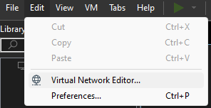
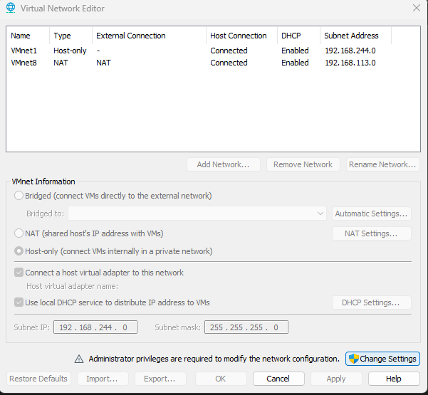
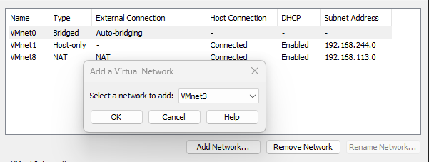
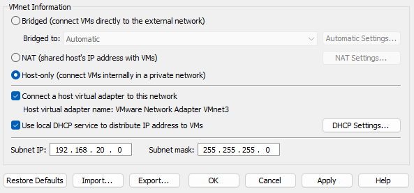

Crear red virtual privada VMWARE
En vmware vamos a crear una red privada para nuestras maquinas, podemos usarla en cualquiera que creemos para que estén conectadas en la misma subred sin acceso a internet y así tenerlas aisladas
.




Podemos configurar la subred a gusto, en este caso la vamos a dejar en 192.168.20.0 por que dentro de nuestra subred todas las maquinas serán asignadas con un 192.168.20.xxx